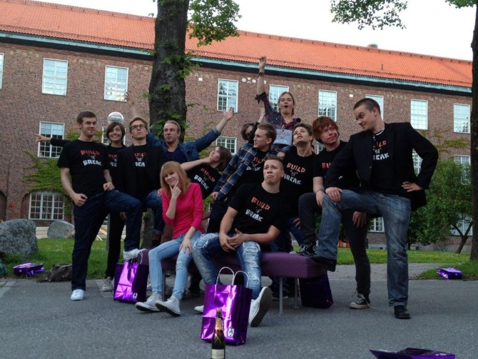

Role:Project Manager, Developer (Unity3D, C#)
Context: University of Skövde, Game Project 2 (Spring 2012)
Time: 10 weeks full-time
Team: 17 students from Game Design, Game Programming, Game Graphics or Game Audio majors.
Build 'n' Break is a project developed from scratch by 17 game development students. We participated in the Swedish Game Awards 2012 and won Gamers' Choice and was nominated for Game of the Year. As a result, we were invited to visit Wooga in Berlin where I would later end up writing my Bachelor thesis.
Build 'n' Break is a two-player "just hanging out on the couch" kind of game, bringing back the feeling we had of playing games growing up. As the game begins, the two players will simultaneously build their own tower using a randomized mix of blocks. As the tower is becoming finished, the player needs to put up to three cannons at strategic locations on their tower(s). The high up the cannon is placed, the more force it can shoot with, thus incentivizing the player to build more exciting structures. The game is won as you shoot down all of your opponents cannons, making the cannon both the players offense and defense.
After a fixed amount of time, the game moves to the second phase: the Attack Phase. Here, the game becomes turn-based as the two players take turns to shoot down their opponents cannons. When aiming, the player need to take into account the wind blowing sideways as well as the angle to adjust how high the cannon ball will fly.